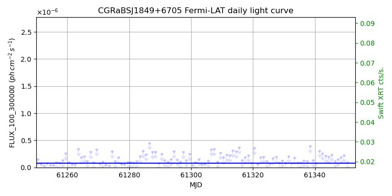
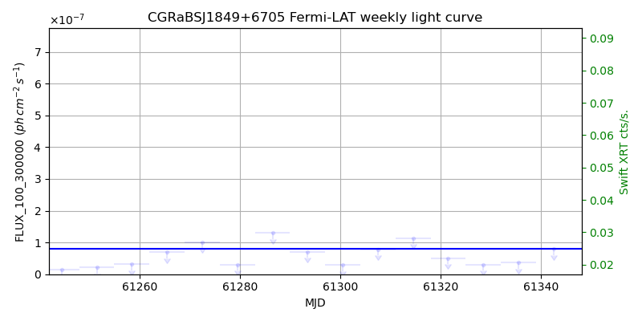
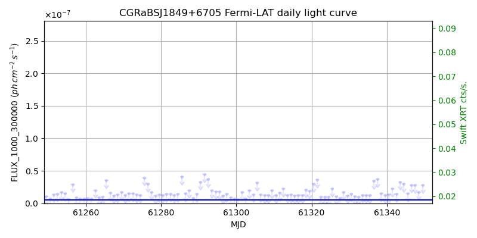
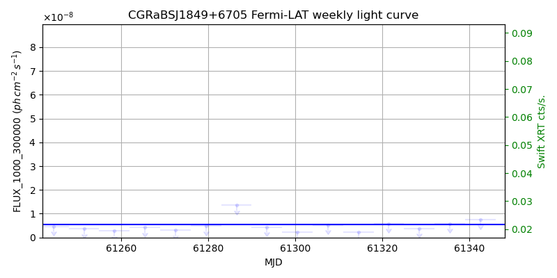

LAT Lightcurve site: https://fermi.gsfc.nasa.gov/ssc/data/access/lat/msl_lc/source/CGRaBS_J1849p6705
Swift site: https://www.swift.psu.edu/monitoring/source.php?source=CGRaBSJ1849+6705
NED: Query
Time of last update of this page: UT: 2026-11-07 16:25 (MJD: 61351.684)
| Property | Value |
|---|---|
| R.A. | 18:49:16.08 |
| Dec. | 67:05:42.0 |
| z | 0.657 |
| 3FGL SpectrumType | LogParabola |
| 3FGL PL Index | |
| 3FGL Flux_100_300000 | 8.01e-08 1 / (s cm2) |
| 3FGL Flux_1000_300000 | 5.53e-09 1 / (s cm2) |
| 3FGL Flux >200 GeV | 2.54e-12 1 / (s cm2) |
| 3FGL Extrap. Crab >200 GeV | 0.01 |
| 3FGL Flux After EBL Absorption >200GeV | 2.18e-13 1 / (s cm2) |
| 3FGL EBL Crab Fraction >200GeV | 0.00 |

| MJD | dMJD | Flux | dFlux | Frac3FGL | FracCrab>200GeV | EBLFracCrab>200GeV |
|---|---|---|---|---|---|---|
| 61346.50 | 0.50 | 1.19e-07 | 0.00e+00 | 0.00 | 0.00 | 0.00 |
| 61347.50 | 0.50 | 1.49e-07 | 0.00e+00 | 0.00 | 0.00 | 0.00 |
| 61348.50 | 0.50 | 1.90e-07 | 0.00e+00 | 0.00 | 0.00 | 0.00 |
| 61349.50 | 0.50 | 2.24e-07 | 0.00e+00 | 0.00 | 0.00 | 0.00 |
| 61350.50 | 0.50 | 9.30e-08 | 0.00e+00 | 0.00 | 0.00 | 0.00 |

| MJD | dMJD | Flux | dFlux | Frac3FGL | FracCrab>200GeV | EBLFracCrab>200GeV |
|---|---|---|---|---|---|---|
| 61314.50 | 3.50 | 1.14e-07 | 0.00e+00 | 0.00 | 0.00 | 0.00 |
| 61321.50 | 3.50 | 5.09e-08 | 0.00e+00 | 0.00 | 0.00 | 0.00 |
| 61328.50 | 3.50 | 3.02e-08 | 0.00e+00 | 0.00 | 0.00 | 0.00 |
| 61335.50 | 3.50 | 3.75e-08 | 0.00e+00 | 0.00 | 0.00 | 0.00 |
| 61342.50 | 3.50 | 7.98e-08 | 0.00e+00 | 0.00 | 0.00 | 0.00 |

| MJD | dMJD | Flux | dFlux | Frac3FGL | FracCrab>200GeV | EBLFracCrab>200GeV |
|---|---|---|---|---|---|---|
| 61346.50 | 0.50 | 2.84e-08 | 0.00e+00 | 0.00 | 0.00 | 0.00 |
| 61347.50 | 0.50 | 2.82e-08 | 0.00e+00 | 0.00 | 0.00 | 0.00 |
| 61348.50 | 0.50 | 1.74e-08 | 0.00e+00 | 0.00 | 0.00 | 0.00 |
| 61349.50 | 0.50 | 2.81e-08 | 0.00e+00 | 0.00 | 0.00 | 0.00 |
| 61350.50 | 0.50 | -1.00e+00 | 0.00e+00 | 0.00 | 0.00 | 0.00 |

| MJD | dMJD | Flux | dFlux | Frac3FGL | FracCrab>200GeV | EBLFracCrab>200GeV |
|---|---|---|---|---|---|---|
| 61314.50 | 3.50 | 2.17e-09 | 0.00e+00 | 0.00 | 0.00 | 0.00 |
| 61321.50 | 3.50 | 5.90e-09 | 0.00e+00 | 0.00 | 0.00 | 0.00 |
| 61328.50 | 3.50 | 3.78e-09 | 0.00e+00 | 0.00 | 0.00 | 0.00 |
| 61335.50 | 3.50 | 5.82e-09 | 0.00e+00 | 0.00 | 0.00 | 0.00 |
| 61342.50 | 3.50 | 7.42e-09 | 0.00e+00 | 0.00 | 0.00 | 0.00 |
--------------------------------------------------------- Using user-supplied coords: 18:49:16.08 67:05:42.0 2000 --------------------------------------------------------- FLWO UT night of: 2026-11-08 Local Sid. @ Midnight: 02:46 Sunset (-15.0) (local, UT): 18:38 01:38 Sunrise (-15.0) (local, UT): 05:37 12:37 Moonrise (local, UT): Moonset (local, UT): Moon phase: 0.01 --------------------------------------------------------- AzTime LSID UT Obj_el Obj_az Mn_el Mn_az Sep. --------------------------------------------------------- 18:38 21:23 01:38 47.9 338.8 -28.7 267.4 99.7 19:08 21:53 02:08 45.5 336.4 -34.9 271.0 99.7 19:38 22:23 02:38 42.9 334.7 -41.1 275.0 99.7 20:08 22:53 03:08 40.1 333.6 -47.2 279.4 99.6 20:38 23:23 03:38 37.2 333.0 -53.2 284.6 99.6 21:08 23:54 04:08 34.3 332.8 -59.1 291.1 99.5 21:38 00:24 04:38 31.4 333.1 -64.6 299.6 99.5 22:08 00:54 05:08 28.5 333.8 -69.7 311.6 99.4 22:38 01:24 05:38 25.7 334.8 -73.6 329.5 99.4 23:08 01:54 06:08 23.1 336.1 -75.7 354.4 99.4 23:38 02:24 06:38 20.6 337.7 -74.9 21.4 99.3 00:08 02:54 07:08 18.2 339.5 -71.7 42.7 99.3 00:38 03:24 07:38 16.1 341.6 -67.1 57.1 99.3 01:08 03:54 08:08 14.2 343.9 -61.8 67.1 99.2 01:38 04:24 08:38 12.6 346.4 -56.1 74.4 99.2 02:08 04:54 09:08 11.2 349.1 -50.2 80.1 99.2 02:38 05:24 09:38 10.2 351.8 -44.1 84.9 99.2 03:08 05:54 10:08 9.4 354.7 -38.1 89.1 99.2 03:38 06:25 10:38 9.0 357.6 -32.0 93.0 99.2 04:08 06:55 11:08 8.9 0.6 -25.9 96.6 99.2 04:38 07:25 11:38 9.1 3.5 -19.9 100.1 99.2 05:08 07:55 12:08 9.7 6.4 -13.9 103.7 99.3 05:37 08:24 12:37 10.5 9.1 -8.3 107.1 99.3 --------------------------------------------------------- Source never above horizon of 55.0 deg. Dark hours >55 deg.: 0.00